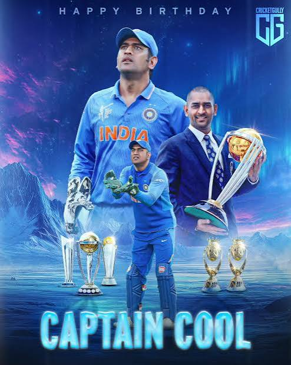
.jpg)
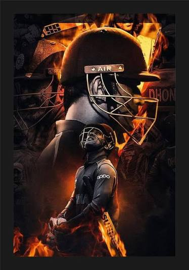
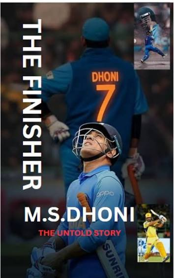
IPL

Ms Dhoni five times IPL champion and two times CLT20 champion

Champion of 2010
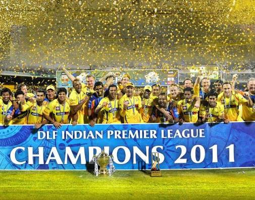
Champion of 2011
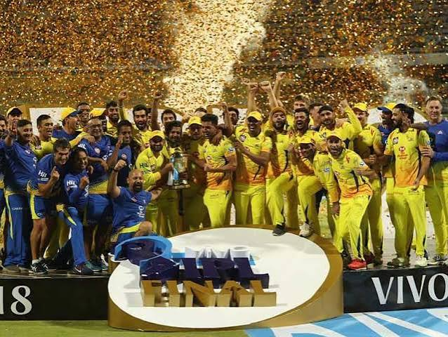
Champion of 2018
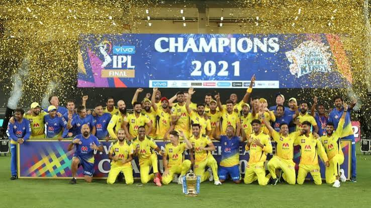
Champion of 2021
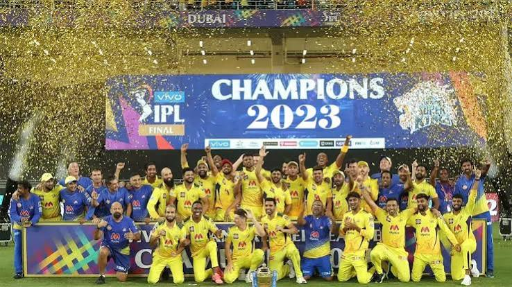
Champion of 2023
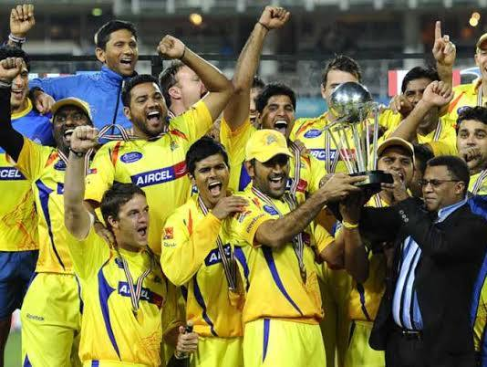
Champion of 2010 CLT20
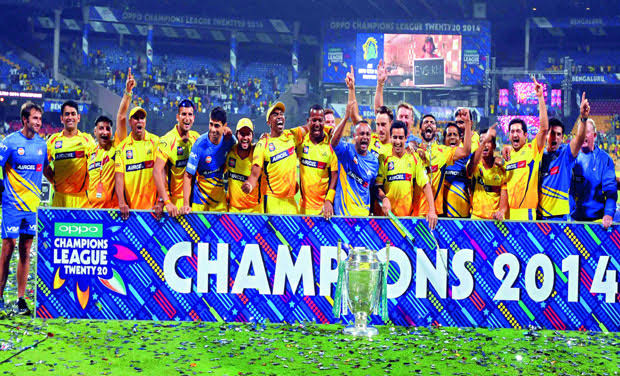
Champion of 2014 CLT20
IPL Career
Dhoni made his IPL debut in 2008 for the Chennai Super Kings (CSK) franchise.
He has been an integral part of the team since then, leading them to multiple IPL titles.
Under his captaincy, CSK has won the IPL championship in 2010, 2011, 2018, 2021, and 2023.
Dhoni's leadership and finishing abilities have made him one of the most successful captains in IPL history.
Matches:278
Runs: 5439
Average: 38.30
Highest Run: 88
Strike Rate: 137.45
half-Centuries: 12
Total dismissals: 201
Catches behind the stumps: 154
Stumpings: 47
Six: 264
Four: 375
CLT20 Career
Matches: 24
Innings: 23
Runs: 449
Highest Score: 63
Batting Average: 29.93
Srike Rate: 141.19
Fifty: 1
Six: 26
Four: 19
ODI

MS dhoni won one World cup , one Champions Trophy andone Asia cup
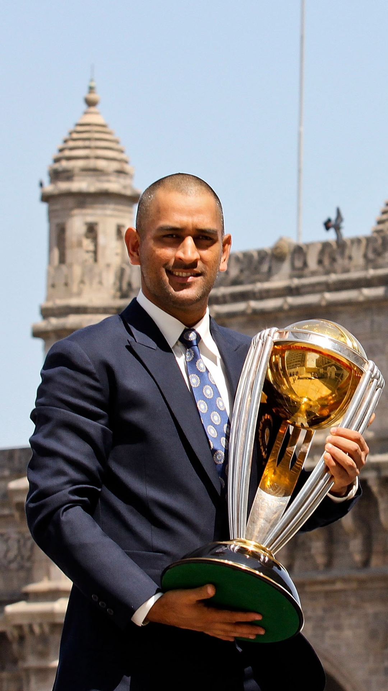
Champion of 2010 ODI world cup
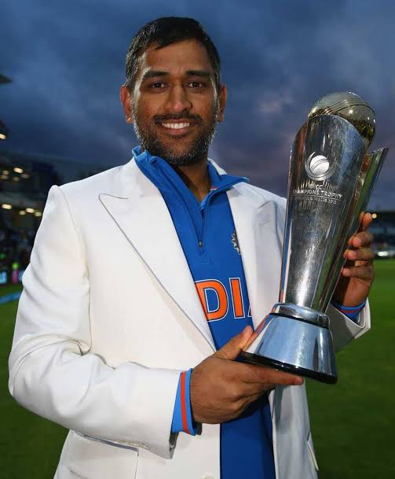
Won Champion Trophy 2013
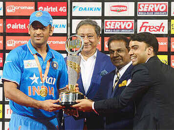
Won Asia cup in 2010
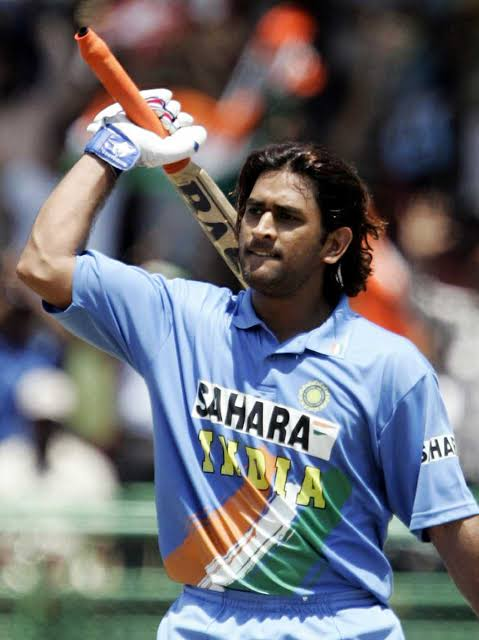
First ODI International century
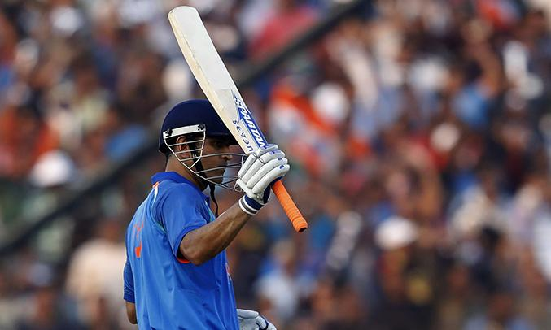
Last ODI International century
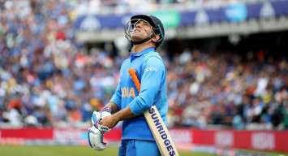
This is the Image of ms dhoni last International match
in this match he give his 100% but he can't change gods Plan
ODI Career
Ms dhoni also come in a list of most successful captian .
He won one One time World cup and one time champion trophy.
He is a second Indian captain to won world cup.
Matches: 350
Innings: 297
Run: 10773
Average: 50.57
Highest Score: 183
Strike rate: 87.56
Century: 10
Half century: 73
Sixes: 229
Four: 826
Dismissals: 444
Catches behind the stumps:321
Stumping: 123
Test Cricket
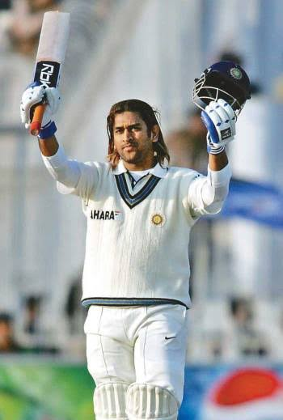
Ms dhoni won Two Test mace in his career
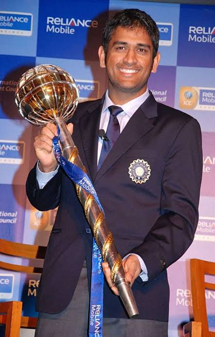
Won Test Mace
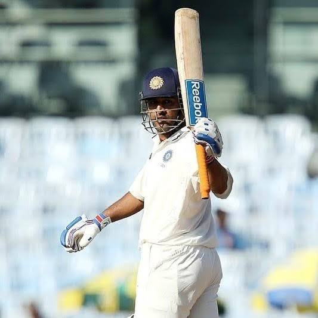
Ms Dhoni First Double Century this century define his Dominance in test cricket
Test Career
Matches: 90
Innings: 144
Run: 4876
Batting Average: 38.09
Strike Rate: 59.11
Highest Score: 224
Centuries: 6
Half Century: 33
Six: 78
Fours: 544
Catches behind the stumps:256
Stumpings: 38
T20
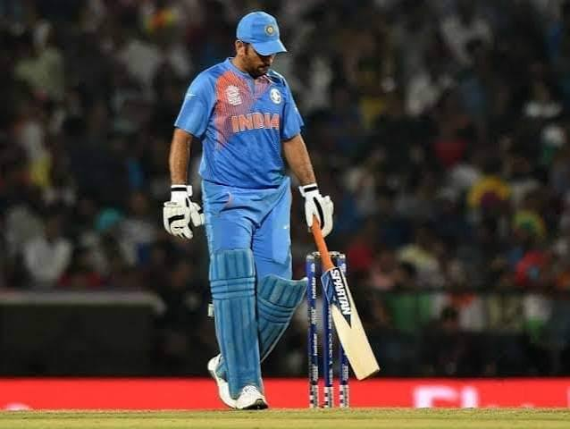
MS dhoni won one T20 world cup and one Asia cup
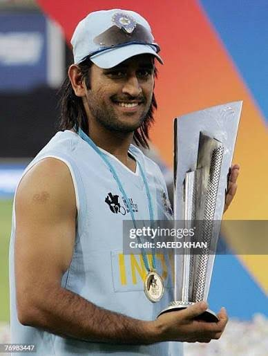
T20 World cup champion 2010
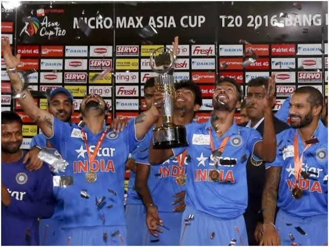
Champion of Asia cup 2016
T20 Career
Matches: 98
Innings: 85
Runs: 1617
Average: 37.60
Srike Rate: 126.13
Fiftes: 2
Catches behind the stumps:57
Stumpings: 34
Records made By Ms Dhoni
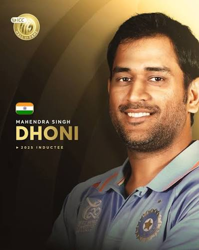
Captancy World Records
- Most International Matches as Captain:Dhoni captained India
in 332 international Matches
- ICC Trophy Sweep: the only captain to won the T20 World cup,
ODI World cup, Champions Trophy
- Leading from Behind the Stumps: He holds the record for the
most matches as a captain who also kept wickets
- Test Rankings Peak: He was the first Indian captain to
lead India to the No. 1 ranking in the ICC Test Leaderboard (2009).
- Asia Cup Dominance: The only cricket History captain to won asia
cup in both format
- Most sixes as a Captain: Dhoni smashed 211 sixes across formats
as captain, the highest by an Indian skipper
Wicketkeeping Records
- Most International Stumping: Dhoni holds the world record for
the highest number of stumpings in international cricket,
with 195 stumpings across formats.
- Most WicketKeeping Dismissals for India: He has 829
dismissals (634 catches, 195 stumpings) to his name, ranking third
globally behind Mark Boucher and Adam Gilchrist
- Most Matches as Wicketkeeper-Captain: He is the only player to
lead his country in more than 60 Tests (60) and 200 ODIs (200)
while simultaneously acting as the designated wicketkeeper.
- Fastest Stumping: He recorded a lightning-fast stumping of just
0.08 seconds to dismiss Keemo Paul in 2018.
Batting & Finishing Records
- Highest ODI Score by a Wicketkeeper: His unbeaten 183*
against Sri Lanka in 2005 remains the highest individual
score by a wicketkeeper in ODI history.
- Most Not Outs in ODI History: Living up to his title as the
ultimate finisher, Dhoni remained unbeaten 84 times in ODIs.
- Highest Average in Successful Chases: He holds a staggering
batting average of 102.71 in successful ODI run chases.
- Fastest to ICC ODI No. 1 Ranking: He reached the top spot in
the ICC Men's ODI Batting Rankings in just 42 innings, the fastest by any batsman.
- Most ODI Centuries at No. 7: He has scored 2 centuries
batting at the number 7 position or lower, a joint record.
- Highest Test Score by an Indian Wicketkeeper: Hit 224 runs
against Australia in Chennai (2013).
Indian Premier League (IPL) Records
- Most Matches Played: Dhoni was the first cricketer to breach
the 250-match milestone in IPL history.
- Most Successful IPL Captaincy: He has led the Chennai Super
Kings (CSK) to 5 IPL titles (2010, 2011, 2018, 2021, 2023) and 10
finals, making him the joint-most successful captain alongside Rohit Sharma.
- First Captain to 100 IPL Wins: He was the first player in IPL
history to achieve 100 match victories strictly as a captain.
- Most Dismissals in IPL: He holds the record for the most dismissals
by a wicketkeeper in IPL history.
Awards
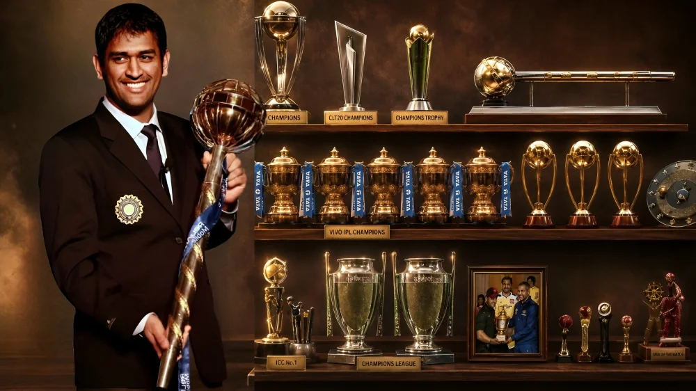
Mahendra Singh Dhoni has received India's highest civilian and sporting honors,
major international cricket awards, and military distinctions
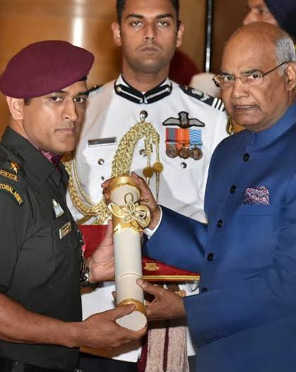
Padma Bhushan
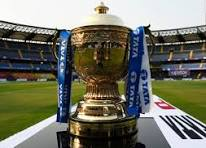
IPL champion 5 times
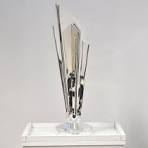
ICC T20 World cup
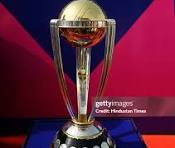
ICC ODI World cup
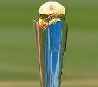
ICC Champions Trophy
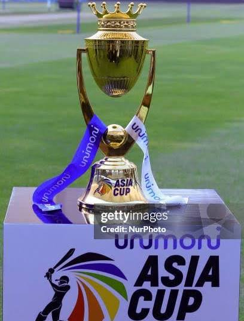
Asia cup ODI
MS dhoni six hitting animation